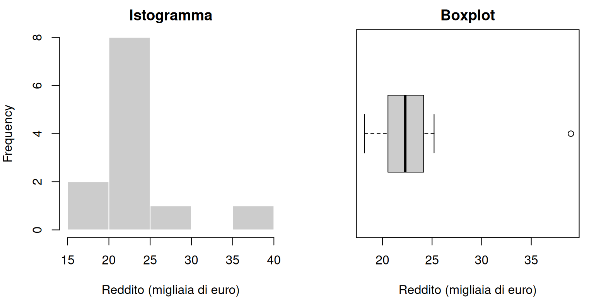

Una tabella con migliaia di osservazioni non risponde, da sola, a domande come: qual è il reddito tipico di un territorio? Quanto differiscono i comuni tra loro? La disoccupazione è più elevata proprio dove il reddito è più basso? La statistica descrittiva raccoglie strumenti per ordinare, sintetizzare e rappresentare i dati, senza perdere di vista la domanda che ha motivato la raccolta.
Questi strumenti costituiscono il primo passaggio di quasi ogni analisi economica. Permettono di individuare errori, valori anomali e differenze rilevanti prima di applicare modelli più complessi. Servono anche a comunicare i risultati in modo comprensibile. L’analisi descrittiva riassume le osservazioni disponibili; l’inferenza statistica, invece, usa un campione per formulare conclusioni più generali su una popolazione, tenendo conto dell’incertezza. Descrivere, inoltre, non significa spiegare: una regolarità osservata nei dati può suggerire nuove domande, ma non dimostra da sola un rapporto causale.
2.0.1 Frequenze e distribuzioni
La distribuzione descrive quali valori assume una variabile e con quale frequenza. Per una variabile qualitativa, la frequenza assoluta \(n_j\) è il numero di osservazioni appartenenti alla modalità \(j\). La frequenza relativa è
\[
f_j = \frac{n_j}{n},
\]
dove \(n\) è il numero totale di osservazioni. La somma delle frequenze assolute è \(n\), mentre la somma delle frequenze relative è 1. Moltiplicando \(f_j\) per 100 si ottiene la percentuale. Le frequenze relative consentono di confrontare gruppi di diversa numerosità: 200 disoccupati hanno un significato diverso in un comune di 1.000 residenti e in uno di 100.000.
Quando le modalità sono ordinabili, si può calcolare anche la frequenza relativa cumulata:
\[
F_j = \sum_{h=1}^{j} f_h.
\]
Il simbolo \(F_j\) indica la quota di osservazioni che assume una modalità non superiore alla modalità \(j\). Se, per esempio, \(F_j=0{,}70\) in corrispondenza di un reddito di 25 mila euro, il 70% delle unità osservate ha un reddito non superiore a quella soglia. Non ha invece senso cumulare categorie nominali come provincia, religione o partito, perché il risultato dipenderebbe da un ordinamento arbitrario.
Per una variabile quantitativa si possono elencare tutti i valori oppure raggrupparli in classi, cioè intervalli che non si sovrappongono. Il raggruppamento rende leggibile una grande quantità di dati, ma nasconde parte del dettaglio; intervalli scelti in modo diverso possono produrre impressioni visive diverse. Se la classe \(j\) ha ampiezza \(a_j\), la sua densità di frequenza relativa è \(D_j=f_j/a_j\). Questa distinzione diventa essenziale quando le classi hanno ampiezze diverse: nell’istogramma è l’area del rettangolo, non la sola altezza, a dover essere proporzionale alla frequenza.
Nel seguito useremo un campione ipotetico di dodici comuni. I dati sono simulati a scopo didattico e non descrivono territori reali. Il reddito è espresso in migliaia di euro per residente, la disoccupazione in percentuale e la popolazione in migliaia di residenti.
# In una cross-section l'ordine delle righe non contiene informazione.# Il seme rende riproducibile anche questo ordinamento casuale.comuni <- comuni[sample(seq_len(nrow(comuni))), ]row.names(comuni) <-NULL# Frequenze assolute e percentuali per areafrequenze_area <-table(comuni$area)percentuali_area <-prop.table(frequenze_area) *100frequenze_area
Area Metropolitana Città
6 6
round(percentuali_area, 1)
Area Metropolitana Città
50 50
I due gruppi contengono sei comuni ciascuno e rappresentano quindi il 50% delle osservazioni. Questa percentuale riguarda i comuni, non i residenti: poiché le popolazioni comunali sono diverse, non possiamo concludere che metà dei residenti viva in ciascuna area. Il denominatore deve essere sempre coerente con la domanda.
2.0.2 Valori mancanti: assenza di informazione, non valore zero
Un valore può mancare perché un comune non ha trasmesso il dato, perché una domanda non era applicabile o perché si è verificato un errore. In R un valore mancante è normalmente indicato con NA. Sostituirlo automaticamente con zero è quasi sempre scorretto: “reddito non disponibile” non significa “reddito nullo”.
Molte funzioni di R restituiscono NA quando il vettore contiene valori mancanti. L’argomento na.rm = TRUE permette di calcolare, per esempio, mean(x, na.rm = TRUE) sulle sole osservazioni disponibili. Questa scelta non risolve il problema: cambia il campione effettivamente analizzato. Se la probabilità che un dato manchi è collegata al fenomeno studiato, anche la sintesi calcolata sui casi completi può essere distorta. Occorre quindi riportare quanti valori mancano, motivare il criterio adottato e controllare il denominatore di ogni percentuale.
2.1 Dove si concentra la distribuzione
Gli indici di posizione riassumono dove si collocano i dati. Nessun indice è “il centro” in ogni situazione: la scelta dipende dal tipo di variabile e dalla forma della distribuzione.
2.1.1 Media, mediana e moda
Per \(n\) osservazioni quantitative \(x_1, x_2, \ldots, x_n\), la media aritmetica è
\[
\bar{x} = \frac{1}{n}\sum_{i=1}^{n}x_i.
\]
Il simbolo \(x_i\) indica il valore osservato per l’unità \(i\), \(n\) il numero di unità e \(\bar{x}\) la media. La media utilizza tutte le osservazioni e può essere letta come il valore che ciascuna unità avrebbe se il totale fosse distribuito in parti uguali. Proprio perché usa tutti i valori, risente molto di osservazioni estreme.
La mediana è invece il valore che, dopo avere ordinato i dati, lascia il 50% delle osservazioni al di sotto e il 50% al di sopra. Se \(n\) è pari, è la media dei due valori centrali. È meno sensibile ai valori estremi ed è spesso più rappresentativa per redditi, patrimoni e prezzi immobiliari, le cui distribuzioni tendono a essere asimmetriche.
La moda è il valore o la modalità più frequente. Può essere usata anche per variabili qualitative, ma può non esistere oppure essere multipla. Nel piccolo esempio ogni reddito compare una sola volta: indicare una moda non sarebbe informativo.
media mediana minimo massimo
23.37 22.30 18.20 39.00
Il reddito medio è 23,37 mila euro, mentre la mediana è 22,30 mila. La differenza è dovuta soprattutto al valore di 39 mila euro del comune L: essendo molto elevato rispetto agli altri, sposta la media verso l’alto. In questo caso la mediana descrive meglio il comune “centrale”, mentre la media resta utile per ricostruire il reddito complessivo per residente medio soltanto se si usano pesi adeguati.
2.1.2 Media ponderata
Una media semplice attribuisce lo stesso peso a ogni riga. Se vogliamo stimare il reddito medio del residente e i comuni hanno popolazioni differenti, dobbiamo invece ponderare il reddito comunale per la popolazione:
La media ponderata è 23,04 mila euro, inferiore alla media semplice di 23,37. Il comune con reddito più alto ha infatti una popolazione relativamente piccola. La media semplice risponde alla domanda “qual è il reddito medio dei comuni?”, dando a ogni comune lo stesso peso; la media ponderata risponde alla domanda “qual è il reddito medio dei residenti?”, sotto l’ipotesi semplificatrice che il reddito comunale riportato sia applicabile ai residenti del comune.
AvvisoUn errore frequente: confondere unità e persone
Una media di valori comunali non coincide necessariamente con la media individuale. Il passaggio da dati aggregati a conclusioni sugli individui richiede pesi corretti e informazioni compatibili. Inoltre, una relazione osservata tra comuni non implica che la stessa relazione valga tra gli individui: questa conclusione indebita è nota come fallacia ecologica.
2.2 Quanto sono dispersi i dati
Due distribuzioni possono avere la stessa media ma essere molto diverse. Un reddito medio di 25 mila euro può derivare da valori tutti vicini a 25 oppure da una forte distanza tra territori ricchi e poveri. Gli indici di dispersione misurano questa eterogeneità.
2.2.1 Campo di variazione, quantili e intervallo interquartile
Il campo di variazione (range) è la differenza tra massimo e minimo. È immediato, ma dipende soltanto da due osservazioni e risente molto dei valori estremi.
Un quantile di ordine \(p\) è un valore che lascia una proporzione \(p\) delle osservazioni al di sotto o in corrispondenza di esso. I tre quartili dividono i dati ordinati in quattro parti: il primo quartile \(Q_1\) corrisponde al 25%, il secondo alla mediana e il terzo \(Q_3\) al 75%. L’intervallo interquartile è
\[
IQR = Q_3 - Q_1.
\]
Esso misura l’ampiezza della metà centrale dei dati ed è poco influenzato dai valori estremi. Esistono diversi metodi di interpolazione per calcolare i quantili; con campioni piccoli software diversi possono quindi restituire risultati leggermente differenti.
2.2.2 Varianza e deviazione standard
La deviazione di un’osservazione dalla media è \(x_i-\bar{x}\). Poiché le deviazioni positive e negative si compensano, le eleviamo al quadrato. La varianza campionaria è
dove \(s^2\) indica la varianza e \(n-1\) è il denominatore usato quando i dati sono considerati un campione. Se le unità osservate costituiscono invece l’intera popolazione di interesse, la varianza descrittiva si indica spesso con \(\sigma^2\) e si divide per la numerosità \(N\) della popolazione:
dove \(\mu\) è la media della popolazione. La distinzione fra \(n-1\) e \(N\) non è un dettaglio puramente formale: dipende dal ruolo attribuito ai dati. La funzione var() di R, usata più avanti, calcola la varianza campionaria con denominatore \(n-1\).
La varianza è espressa nell’unità di misura al quadrato, quindi è poco intuitiva. La deviazione standard campionaria è la sua radice quadrata,
\[
s = \sqrt{s^2},
\]
e torna all’unità di misura originaria. Per la popolazione si usa analogamente \(\sigma=\sqrt{\sigma^2}\). Un valore elevato segnala che le osservazioni sono, nel complesso, lontane dalla media. Non significa che ogni osservazione disti esattamente \(s\) dalla media.
Quando si confronta la variabilità di grandezze positive con scale diverse, può essere utile il coefficiente di variazione:
\[
CV = \frac{s}{\bar{x}} \times 100.
\]
Il \(CV\) esprime la deviazione standard come percentuale della media. Non è appropriato quando la media è nulla, prossima a zero o quando lo zero della scala è convenzionale, come per la temperatura in gradi Celsius.
campo IQR varianza
20.80 3.20 28.50
deviazione_standard coefficiente_variazione
5.34 22.85
I redditi coprono un campo di 20,80 mila euro. L’IQR è però soltanto 3,20 mila euro: la metà centrale dei comuni è relativamente concentrata, mentre il campo è ampliato dal comune L. La deviazione standard è 5,34 mila euro, pari al 22,85% della media. Gli indici raccontano aspetti diversi e vanno letti congiuntamente, non scelti in base a quello che sostiene meglio una tesi.
2.3 Forma della distribuzione e valori anomali
Una distribuzione è simmetrica quando la parte a sinistra e quella a destra del centro hanno forma simile. È asimmetrica a destra quando pochi valori elevati formano una coda lunga verso destra, come spesso accade per redditi e patrimoni; in tal caso la media tende a superare la mediana. L’asimmetria a sinistra presenta la situazione opposta.
Un valore anomalo (outlier) è un’osservazione insolitamente lontana dalle altre. Può derivare da un errore di inserimento, da una diversa unità di misura oppure da un caso reale e sostantivamente importante. Il boxplot usa spesso una regola operativa: segnala i valori inferiori a \(Q_1-1{,}5\,IQR\) o superiori a \(Q_3+1{,}5\,IQR\).
Questa regola è uno strumento diagnostico, non una definizione universale. Un comune molto ricco non è necessariamente un errore; eliminarlo automaticamente potrebbe cancellare proprio il fenomeno che vogliamo studiare. Prima di intervenire occorre controllare la fonte, la definizione della variabile e il contesto.
2.3.1 Istogramma e boxplot
L’istogramma divide l’asse dei valori in intervalli adiacenti ed è adatto a variabili quantitative. L’area di ciascun rettangolo rappresenta la frequenza della classe. Se tutte le classi hanno uguale ampiezza, anche le altezze sono proporzionali alle frequenze; con classi diseguali, invece, sull’asse verticale occorre riportare la densità. La forma del grafico dipende quindi dalla scelta degli intervalli. Un grafico a barre rappresenta invece categorie distinte: le barre sono separate, hanno uguale larghezza e soltanto la loro altezza esprime la frequenza.
Il boxplot mostra la mediana, i quartili, l’IQR e gli eventuali valori segnalati come anomali. È compatto e utile per confrontare gruppi, ma non mostra bene distribuzioni con più addensamenti e, con pochissime osservazioni, va interpretato con cautela.
par(mfrow =c(1, 2), mar =c(4, 4, 2, 1))hist( comuni$reddito,breaks =6,col ="grey80",border ="white",main ="Istogramma",xlab ="Reddito (migliaia di euro)")boxplot( comuni$reddito,horizontal =TRUE,col ="grey80",main ="Boxplot",xlab ="Reddito (migliaia di euro)")

Distribuzione dei redditi nei dodici comuni simulati: istogramma e boxplot.
par(mfrow =c(1, 1))
L’istogramma mostra che quasi tutti i comuni si concentrano tra 18 e 26 mila euro, mentre uno è molto più in alto. Il boxplot segnala il valore di 39 come anomalo secondo la regola di 1,5 IQR. I grafici non stabiliscono se il dato sia errato: indicano dove approfondire il controllo.
2.4 Confrontare variabili su scale diverse
Non è sensato confrontare direttamente una differenza di 5 mila euro di reddito con una differenza di 5 punti percentuali di disoccupazione. La standardizzazione colloca una variabile su una scala priva di unità di misura. Per l’osservazione \(i\), lo z-score è
\[
z_i = \frac{x_i-\bar{x}}{s},
\]
dove \(x_i\) è il valore originale, \(\bar{x}\) la media e \(s\) la deviazione standard. Uno z-score positivo indica un valore sopra la media; uno negativo indica un valore sotto la media. Il valore assoluto esprime la distanza dalla media in deviazioni standard.
comune reddito z_reddito
NA <NA> NA NA
NA.1 <NA> NA NA
NA.2 <NA> NA NA
Il comune A ha uno z-score di circa -0,97: il suo reddito è quasi una deviazione standard sotto la media. Il comune L ha uno z-score di circa 2,93, quindi si trova quasi tre deviazioni standard sopra la media. Lo z-score descrive una posizione relativa, non una probabilità e non implica automaticamente che il dato sia impossibile.
La standardizzazione è utile quando si costruiscono indicatori sintetici o si applicano metodi sensibili alla scala. Non rende però confrontabili concetti privi di un significato comune e non corregge asimmetrie, errori o qualità scadente dei dati.
2.5 Associazione tra due variabili
Finora abbiamo descritto una variabile alla volta. Spesso la domanda riguarda invece il modo in cui due caratteristiche variano insieme: nei comuni con reddito più alto la disoccupazione tende a essere più bassa?
Per due variabili quantitative \(X\) e \(Y\), la covarianza campionaria è
dove \(x_i\) e \(y_i\) sono i valori delle due variabili per l’unità \(i\), mentre \(\bar{x}\) e \(\bar{y}\) sono le rispettive medie. Una covarianza positiva indica che valori sopra la media tendono a presentarsi insieme; una covarianza negativa indica che valori sopra la media di una variabile tendono ad accompagnarsi a valori sotto la media dell’altra. La sua grandezza dipende dalle unità di misura e non è quindi facile da confrontare.
Il coefficiente di correlazione lineare di Pearson standardizza la covarianza:
\[
r_{xy} = \frac{s_{xy}}{s_xs_y},
\]
dove \(s_x\) e \(s_y\) sono le deviazioni standard di \(X\) e \(Y\). Il coefficiente varia tra -1 e 1. Il segno indica la direzione dell’associazione lineare; il valore assoluto ne indica l’intensità. Valori vicini a zero segnalano assenza di associazione lineare, ma non escludono una relazione non lineare.
2.5.1 Diagramma di dispersione e correlazione
Il diagramma di dispersione (scatterplot) rappresenta ogni unità con un punto. Deve essere esaminato prima di interpretare la correlazione, perché rende visibili forma, gruppi e osservazioni influenti che un singolo numero nasconde.
La correlazione è -0,82: nel campione simulato, i comuni con reddito più alto tendono ad avere una disoccupazione più bassa e l’associazione lineare è forte. Non possiamo concludere che un aumento del reddito causi una riduzione della disoccupazione. Entrambe le variabili potrebbero dipendere, per esempio, dalla struttura produttiva, dalla composizione demografica o dal livello di istruzione. Inoltre, con sole dodici unità, ogni osservazione può incidere molto sul risultato.
AvvisoTre errori frequenti sulla correlazione
Una correlazione elevata non dimostra un nesso causale.
Una correlazione vicina a zero non esclude relazioni curve o differenze tra gruppi.
Un valore anomalo può rafforzare, indebolire o persino invertire la correlazione; il grafico è indispensabile.
2.5.2 Tabelle doppie e percentuali condizionate
Per due variabili qualitative si usa una tabella di contingenza, o tabella doppia, che conta quante unità presentano ciascuna combinazione di modalità. Le frequenze all’interno della tabella formano la distribuzione congiunta; i totali di riga e di colonna sono le distribuzioni marginali.
Per confrontare gruppi di diversa numerosità sono particolarmente utili i profili condizionati. Se \(n_{ij}\) è il numero di unità nella cella che incrocia la modalità \(i\) della variabile di riga e la modalità \(j\) della variabile di colonna, e \(n_{i+}\) è il totale della riga \(i\), la percentuale condizionata di riga è
\[
f_{j\mid i}=\frac{n_{ij}}{n_{i+}}.
\]
Il simbolo \(j\mid i\) si legge “modalità \(j\) dato il gruppo \(i\)”. Il denominatore cambia da una riga all’altra: per questo tali percentuali rispondono alla domanda “come si distribuisce la variabile di colonna all’interno di ciascun gruppo?”.
Nel campione simulato dividiamo i comuni in due classi di disoccupazione usando, soltanto a fini didattici, la soglia del 12%.
Disoccupazione
Area Almeno 12% Meno del 12%
Area Metropolitana 83.3 16.7
Città 0.0 100.0
Cinque dei sei comuni del Centro, cioè l’83,3%, appartengono alla classe con disoccupazione almeno pari al 12%; nessuno dei sei comuni della Periferia vi appartiene. Il confronto usa percentuali di riga, quindi il denominatore è il numero di comuni in ciascuna area. Il risultato descrive questi dodici casi simulati: non dimostra che l’area determini la disoccupazione. Inoltre, una soglia diversa produrrebbe una tabella diversa e la trasformazione in due classi perde le differenze osservate all’interno di ciascuna classe.
2.6 Rappresentare correttamente tempo e territorio
La scelta del grafico dipende dalla struttura dei dati e dalla domanda:
un grafico a barre confronta frequenze o valori tra categorie;
un istogramma descrive la distribuzione di una variabile quantitativa;
un boxplot confronta posizione e dispersione tra gruppi;
uno scatterplot studia l’associazione tra due variabili quantitative;
un grafico a linee segue una variabile ordinata nel tempo.
In una serie storica i punti consecutivi sono collegati perché il loro ordine ha significato. Collegare con una linea comuni disposti alfabeticamente suggerirebbe invece una continuità inesistente. Una carta tematica può mostrare la distribuzione territoriale, ma aree più grandi attirano visivamente l’attenzione anche quando hanno poca popolazione; colori e classi devono quindi essere scelti e descritti con cura.
Il grafico seguente usa una seconda serie simulata: il tasso di occupazione mensile cresce nel corso dell’anno, con alcune oscillazioni. L’obiettivo è mostrare la forma corretta di una rappresentazione temporale, non documentare un andamento reale.
Il tasso simulato passa dal 57,8% al 59,5%, un aumento di 1,7 punti percentuali. Non è corretto chiamarlo aumento dell’1,7%: la variazione relativa è circa il 2,9% rispetto al valore iniziale. Il capitolo sulle trasformazioni delle serie storiche approfondirà questa distinzione.
2.6.1 Leggere criticamente un grafico
Prima di accettare il messaggio visivo di un grafico è utile controllare:
Fonte e popolazione di riferimento. Chi è incluso e in quale periodo?
Unità di misura e denominatore. Si mostrano euro, percentuali, punti percentuali o valori pro capite?
Scala degli assi. Un asse verticale troncato può amplificare piccole differenze; un asse troppo ampio può nasconderle.
Classi e colori. Negli istogrammi e nelle carte, soglie diverse possono cambiare l’impressione complessiva.
Valori mancanti. Un’area senza dati non equivale a un valore pari a zero.
Confrontabilità. Definizioni, prezzi, popolazioni e confini territoriali sono rimasti coerenti?
Incertezza. Se i valori sono stime campionarie, il grafico mostra l’incertezza associata?
Nel grafico temporale precedente l’asse verticale è limitato tra 55 e 61 per rendere leggibili le variazioni. La scelta è dichiarata e i valori sono espressi chiaramente, ma una scala così ristretta accentua visivamente un cambiamento di soli 1,7 punti. Forma grafica e interpretazione numerica devono procedere insieme.
2.7 Una procedura di analisi descrittiva
Una buona analisi descrittiva non consiste nel produrre automaticamente tutti gli indici disponibili. Una sequenza ragionata è la seguente:
formulare la domanda e identificare unità di analisi, periodo e popolazione;
controllare definizioni, unità di misura, duplicati e valori mancanti;
distinguere variabili qualitative e quantitative e riconoscere la struttura dei dati;
esaminare frequenze e grafici prima di affidarsi a una singola sintesi;
scegliere indici di posizione e dispersione coerenti con la distribuzione;
verificare valori anomali senza eliminarli automaticamente;
studiare le associazioni con grafici e misure appropriate;
comunicare sempre il denominatore e interpretare i risultati nel loro contesto.
Nel nostro esempio, la media da sola avrebbe suggerito un reddito comunale tipico di 23,37 mila euro. Mediana, IQR e boxplot hanno mostrato una realtà più precisa: la metà centrale è concentrata attorno a 22,30 mila euro e un comune molto ricco influenza sensibilmente alcune sintesi. Lo scatterplot e la correlazione hanno poi evidenziato un’associazione negativa tra reddito e disoccupazione, che resta descrittiva e non causale. È questo il valore della statistica descrittiva: trasformare una tabella in un insieme controllabile di evidenze, mantenendo espliciti i limiti di ciò che i dati consentono di affermare.